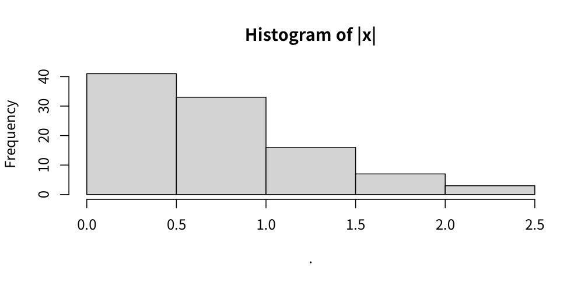

做分析時，大部分時間其實花在「把資料整理成能分析的樣子」：挑出需要的列和欄、算出新變數、分組計算、把表格轉成正確的形狀、把好幾張表合在一起。tidyverse 是一組設計理念一致的套件，專門處理這些事。這一章學兩個核心套件：dplyr （操作資料）和 tidyr （重塑資料）。
複製 R library ( tidyverse ) # 一次載入 ggplot2、dplyr、tidyr、readr、purrr、tibble 等
載入時 R 會列出載入了哪些套件，以及「Conflicts」——例如 dplyr 的 filter() 蓋過了 base R 的 stats::filter()。這是正常訊息，不是錯誤。
2.1 管線運算子 %>%為什麼需要管線
假設要「產生 100 個常態亂數 → 取絕對值 → 畫直方圖」。傳統寫法有兩種：
複製 R # 寫法一：每一步存一個中間物件
x <- rnorm ( 100 )
y <- abs ( x )
hist ( y )
# 寫法二：函數一層包一層，要從最裡面往外讀
hist ( abs ( rnorm ( 100 )))
寫法一會產生一堆用不到的物件；寫法二步驟一多就很難讀。管線 把它們變成「由上而下、照做事的順序」：
複製 R set.seed ( 1 )
rnorm ( 100 ) %>%
abs () %>%
hist ( main = "Histogram of |x|" )

%>% 做了什麼x %>% f(y) 等於 f(x, y)：把左邊的結果，當成右邊函數的第一個引數 。
複製 R c ( 1 , 4 , 9 ) %>% sqrt () # 等於 sqrt(c(1, 4, 9))
## [1] 1 2 3複製 R c ( 1.234 , 5.678 ) %>% round ( 1 ) # 等於 round(c(1.234, 5.678), 1)
## [1] 1.2 5.7讀程式時，可以把 %>% 唸成「然後」：「拿 1, 4, 9，然後開根號」。
快速鍵：RStudio 按 Ctrl + Shift + M（Mac：Cmd + Shift + M）。
R 4.1 之後內建原生管線 |>，用法幾乎一樣；這門課的講義用 %>%（來自 magrittr 套件，載入 tidyverse 時一起載入）。
dplyr 的函數第一個引數都是資料框，所以能一路用管線接下去：
複製 R iris %>%
filter ( Species == "setosa" ) %>% # 只留 setosa
select ( Sepal.Length , Petal.Length ) %>% # 只留兩欄
head ( 3 )
## Sepal.Length Petal.Length
## 1 5.1 1.4
## 2 4.9 1.4
## 3 4.7 1.3考古題出過 簡答題：%>% 的用途 考古題：「What is the purpose of the %>% operator in the context of the dplyr package? Provide an example of how it can be used in a data manipulation pipeline.」回答要包含：把左邊的結果傳給右邊函數當第一個引數；讓多個步驟由上而下串起來、不用中間物件、更好讀；再舉一個 df %>% filter() %>% group_by() %>% summarise() 的例子。
Concept Check：2.1 管線運算子 %>% 題目照期末考的題型自編（選擇、填空、簡答、寫程式），不是老師出的題目。選擇與填空用英文題幹，附中文題意。
What is the purpose of the %>% operator in the context of the dplyr package? Provide an example of how it can be used in a data manipulation pipeline.
隱藏解答 中文題意
說明 dplyr 中 %>% 的用途，並舉一個資料處理流程的例子。
答案 %>%（pipe）把左邊運算的結果，當作右邊函數的第一個引數傳進去。它讓一連串的資料處理步驟可以依照執行順序由上往下寫，不必建立中間物件，也不用一層層巢狀包住函數，程式比較好讀、好改。
例如：
複製 R mtcars %>%
filter ( cyl == 4 ) %>% # 只留 4 缸車
group_by ( gear ) %>% # 依檔位分組
summarise ( avg_mpg = mean ( mpg )) %>% # 每組平均油耗
arrange ( desc ( avg_mpg )) # 由高到低排序
## # A tibble: 3 × 2
## gear avg_mpg
## <dbl> <dbl>
## 1 5 28.2
## 2 4 26.9
## 3 3 21.5解析
考古題原題（5 分）。回答要有三件事：它做什麼（傳第一個引數）、好處（可讀性、不用中間變數）、一段實際的例子。
Which expression is equivalent to x %>% round(2)?
(A) round(x, 2)(B) round(2, x)(C) x(round, 2)(D) round(x %>% 2)隱藏解答 中文題意
x %>% round(2) 等於哪一個？
答案 (A) round(x, 2)
解析
管線把 x 放到 round() 的第一個引數，原本寫的 2 變成第二個引數，所以是 round(x, 2)。
What is the output of the following code?
複製 R c ( 16 , 25 ) %>% sqrt () %>% sum ()
(A) 9(B) 6.40(C) 41(D) 4 5隱藏解答 答案 (A) 9
解析
先開根號得到 4、5，再加總得到 9。(C) 是先加總不開根號；(B) 是 sqrt(41)，順序反了；(D) 是只做到第一步。
2.2 dplyr 的基本動詞dplyr 把資料操作歸納成幾個動詞 ，每個動詞只做一件事：
動詞
做什麼
作用在
filter()依條件挑出列
列
select()挑出（或排除、重排）欄
欄
mutate()新增或修改欄位
欄
arrange()排序
列
summarise()彙總成一個值
整份或每組
group_by()分組，讓後面的動作「每組各做一次」
列
這一節用課堂的汽車銷售資料 mydata（存在 carsale.Rda，約 3.5 萬筆二手車廣告）。load() 讀 .Rda 檔後，物件會用它原本的名字出現：
複製 R load ( "carsale.Rda" )
dim ( mydata )
## [1] 34677 26複製 R mydata %>% select ( maker , year , price , type , city ) %>% head ()
## maker year price type city
## posted chevrolet 2012 29896 coupe boston
## posted1 chevrolet 2013 18797 SUV boston
## posted2 nissan 2013 15792 sedan boston
## posted3 infiniti 2009 18288 sedan boston
## posted4 infiniti 2013 26389 sedan boston
## posted5 acura 2012 28996 SUV bostonfilter()：依條件挑列複製 R mydata %>%
filter ( price >= 15000 & maker == "toyota" ) %>% # 兩個條件都成立
select ( maker , year , price ) %>%
head ( 3 )
## maker year price
## posted15 toyota 2012 16991
## posted16 toyota 2012 17896
## posted50 toyota 2012 15997複製 R mydata %>%
filter ( maker == "tesla" | maker == "lexus" ) %>% # 任一成立
nrow ()
## [1] 795複製 R mydata %>%
filter ( maker %in% c ( "tesla" , "lexus" )) %>% # 和上面一樣，更簡潔
nrow ()
## [1] 795
條件寫法和第 1 章的邏輯運算相同：== 等於、!= 不等於、& 且、| 或、! 非。
filter() 裡用逗號分隔多個條件，等於用 & 連接：filter(price >= 15000, maker == "toyota")。欄名直接寫，不用 mydata$——dplyr 會在資料框裡找。
條件結果是 NA 的列會被丟掉。
select()：挑欄複製 R mydata %>% select ( maker , year ) %>% head ( 2 ) # 只留兩欄
## maker year
## posted chevrolet 2012
## posted1 chevrolet 2013複製 R mydata %>% select ( type , price , everything ()) %>% names () %>% head () # type、price 移到最前面
## [1] "type" "price" "id" "title" "body" "lat"複製 R mydata %>% select ( - id , - title , - body ) %>% ncol () # 負號：排除
## [1] 23複製 R mydata %>% select ( starts_with ( "t" )) %>% names () # 名稱以 t 開頭的欄
## [1] "title" "type" "transmission" "time"everything() 代表「其餘所有欄」，常用來調整欄位順序。類似的輔助函數還有 starts_with()、ends_with()、contains()。
mutate()：新增欄位複製 R mydata %>%
mutate ( new_price = price * 0.5 , # 打五折
age = 2015 - year ) %>% # 車齡（資料是 2015 年的廣告）
select ( maker , price , new_price , year , age ) %>%
head ( 3 )
## maker price new_price year age
## posted chevrolet 29896 14948 2012 3
## posted1 chevrolet 18797 9398 2013 2
## posted2 nissan 15792 7896 2013 2mutate() 保留原本所有欄位，再加上新欄位。同一個 mutate() 裡，後面的新欄可以用到前面剛建立的欄。
arrange()：排序複製 R mydata %>% arrange ( price ) %>% select ( maker , price ) %>% head ( 3 ) # 由小到大
## maker price
## posted509 toyota 1
## posted531 toyota 1
## posted1040 toyota 1複製 R mydata %>% arrange ( desc ( price )) %>% select ( maker , header , price ) %>% head ( 3 ) # 由大到小
## maker header price
## posted6903 cadillac 2002 Caddy Seville sls 30002500
## posted16005 honda 2001 Honda Accord 9999999
## posted21422 chevrolet 2007 CHEVROLET MONTE CARLO 569500最貴的一台三千萬美元，顯然是打錯了。這就是為什麼要先排序或 summary() 看看極端值——下一節會處理它。
summarise() 與 group_by()：先分組、再彙總複製 R mydata %>% summarise ( avg_price = mean ( price , na.rm = TRUE )) # 全體一個值
## avg_price
## 1 11170複製 R mydata %>%
group_by ( maker ) %>% # 依廠牌分組
summarise ( count = n (), # 每組幾筆
avg_price = mean ( price , na.rm = TRUE )) %>%
arrange ( desc ( count )) %>%
head ( 5 )
## # A tibble: 5 × 3
## maker count avg_price
## <chr> <int> <dbl>
## 1 ford 4266 8872.
## 2 chevrolet 3394 10548.
## 3 toyota 3332 9823.
## 4 honda 2650 11421.
## 5 nissan 2473 8282.
group_by(maker) 本身不會改變資料長相，只是加上「分組」標記；接下來的 summarise() 就會每組各算一次。結果是「一組一列」的新表格。
n() 計算每組的列數，只能在 summarise()、mutate() 裡用。常用的彙總函數：mean()、median()、sd()、min()、max()、sum()、n()、n_distinct()（不重複個數）。
group_by() 後面接 mutate()，則是「每組各自計算，但列數不變」：
複製 R mydata %>%
filter ( maker %in% c ( "bmw" , "tesla" )) %>%
group_by ( maker ) %>%
mutate ( maker_avg = mean ( price , na.rm = TRUE ),
above_avg = price > maker_avg ) %>%
select ( maker , price , maker_avg , above_avg ) %>%
head ( 4 )
## # A tibble: 4 × 4
## # Groups: maker [1]
## maker price maker_avg above_avg
## <chr> <dbl> <dbl> <lgl>
## 1 bmw NA 13717. NA
## 2 bmw 34975 13717. TRUE
## 3 bmw 19997 13717. TRUE
## 4 bmw 30413 13717. TRUE計數與抽樣：count()、tally()、sample_n()
複製 R mydata %>% filter ( price >= 15000 & maker == "toyota" ) %>% tally () # 幾筆
## n
## 1 632複製 R mydata %>% count ( city , sort = TRUE ) # 每個城市幾筆，由多到少
## city n
## 1 nyc 4983
## 2 denver 4979
## 3 sac 4966
## 4 lasvegas 4963
## 5 boston 4958
## 6 sfbay 4942
## 7 chicago 4886複製 R set.seed ( 2026 )
mydata %>% sample_n ( 3 ) %>% select ( maker , price ) # 隨機抽 3 筆
## maker price
## posted14137 toyota 1600
## posted1646 mazda 2450
## posted110212 cadillac 9900複製 R mydata %>% sample_frac ( 0.0001 ) %>% nrow () # 隨機抽 0.01%
## [1] 3count(x) 等於 group_by(x) %>% summarise(n = n())。新版 dplyr 建議用 slice_sample(n = 3) 取代 sample_n(3)，兩者都還能用。
其他常用動詞
複製 R mydata %>% rename ( brand = maker ) %>% select ( brand ) %>% head ( 2 ) # 改名：新名 = 舊名
## brand
## posted chevrolet
## posted1 chevrolet複製 R mydata %>% distinct ( city ) # 不重複的值
## city
## posted boston
## posted2499 chicago
## posted2506 denver
## posted2520 lasvegas
## posted2539 nyc
## posted2570 sac
## posted2670 sfbay複製 R mydata %>% slice_max ( price , n = 2 ) %>% select ( maker , price ) # 最大的 2 筆
## maker price
## posted6903 cadillac 3e+07
## posted16005 honda 1e+07複製 R mydata %>%
mutate ( level = case_when ( price < 5000 ~ "low" ,
price < 20000 ~ "mid" ,
TRUE ~ "high" )) %>%
count ( level )
## level n
## 1 high 7031
## 2 low 12896
## 3 mid 14750case_when() 是多條件版的 ifelse()：由上往下檢查，第一個成立的條件決定結果；最後的 TRUE ~ 代表「其他所有情況」（price 是 NA 的列也會落到這裡，因為前兩個條件的結果是 NA，不算成立）。
考古題出過 寫程式題：filter 與 mutate 考古題：「Suppose you have data called "df". a. Filter the dataset "df" to include only rows where the variable "region" is equal to "North." b. Create a new variable "total_sales" by summing the values of two numeric variables "sales_A" and "sales_B".」參考寫法見本節 Concept Check 最後一題。
Concept Check：2.2 dplyr 的基本動詞 題目照期末考的題型自編（選擇、填空、簡答、寫程式），不是老師出的題目。選擇與填空用英文題幹，附中文題意。
Which dplyr function keeps only the rows that satisfy a condition?
(A) select()(B) mutate()(C) arrange()(D) filter()隱藏解答 答案 (D) filter()
解析
filter() 挑列、select() 挑欄、mutate() 新增欄、arrange() 排序。
What does the following code return?
複製 R df %>% group_by ( city ) %>% summarise ( n = n ())
(A) One row per city, with the number of rows in each city (B) The original data with a new column n added to each row (C) The total number of rows in df as a single number (D) The number of distinct values in the column city 隱藏解答 答案 (A) One row per city, with the number of rows in each city
解析
group_by() 依 city 分組，summarise() 每組算一個值，所以結果是「一個城市一列」，n 是該城市的筆數。(B) 是 group_by() %>% mutate(n = n()) 的效果。
Which code sorts mydata by price from the highest to the lowest?
(A) mydata %>% arrange(desc(price))(B) mydata %>% sort(price, decreasing = TRUE)(C) mydata %>% arrange(-desc(price))(D) mydata %>% order(price)隱藏解答 答案 (A) mydata %>% arrange(desc(price))
解析
arrange() 預設遞增，包上 desc() 變遞減（數值欄也可以寫 arrange(-price)）。(C) 負負得正，又變回遞增；sort() 和 order() 是給向量用的，不能這樣接資料框。
Inside summarise(), the function _
隱藏解答 中文題意
在 summarise() 裡，哪個函數回傳目前這一組的列數？
答案 n()
解析
n() 不需要引數。要算「不重複的個數」則用 n_distinct(欄位)。
Suppose you have data called df.
a. Filter the dataset df to include only rows where the variable region is equal to "North".
b. Create a new variable total_sales by summing the values of two numeric variables sales_A and sales_B in the dataset.
隱藏解答 中文題意
(a) 篩出 region 等於 "North" 的列；(b) 新增 total_sales = sales_A + sales_B。
答案 複製 R df <- data.frame ( region = c ( "North" , "South" , "North" , "East" ),
sales_A = c ( 120 , 80 , 95 , 60 ),
sales_B = c ( 30 , 50 , 45 , 20 ))
# a.
df %>% filter ( region == "North" )
## region sales_A sales_B
## 1 North 120 30
## 2 North 95 45複製 R # b.
df <- df %>% mutate ( total_sales = sales_A + sales_B )
df
## region sales_A sales_B total_sales
## 1 North 120 30 150
## 2 South 80 50 130
## 3 North 95 45 140
## 4 East 60 20 80解析
考古題原題（10 分）。前面三行只是自己造一份測試資料，考試時只要寫 a、b 的程式。(b) 要把結果存回 df（df <- df %>% ...），否則新欄位只會印出來，不會留在 df 裡。base R 寫法：df[df$region == "North", ]、df$total_sales <- df$sales_A + df$sales_B。
易錯提醒
filter(region = "North") 用單一等號會出錯；文字 "North" 要加引號、大小寫要和資料一致。
Using mydata, compute for each city the number of cars and the median price (ignore missing prices), and sort the result by median price from high to low.
隱藏解答 中文題意
依 city 計算車輛數與價格中位數（忽略 NA），依中位數由高到低排序。
答案 複製 R mydata %>%
group_by ( city ) %>%
summarise ( n = n (),
med_price = median ( price , na.rm = TRUE )) %>%
arrange ( desc ( med_price ))
## # A tibble: 7 × 3
## city n med_price
## <fct> <int> <dbl>
## 1 sfbay 4942 8900
## 2 denver 4979 7800
## 3 sac 4966 6988
## 4 boston 4958 6500
## 5 lasvegas 4963 6500
## 6 nyc 4983 5995
## 7 chicago 4886 4500解析
用中位數而不是平均數，是因為有一台三千萬的錯誤值；中位數不受極端值影響。
2.3 清理一份真實資料：carsale 範例課堂的 car example 用 base R 和 dplyr 交替清理這份資料。下面把重要步驟走一遍，同一件事兩種寫法對照著看。
看型別與缺失
複製 R sapply ( mydata , class ) %>% head ( 10 ) # 每一欄的型別（sapply 第 3 章會教）
## $id
## [1] "character"
##
## $title
## [1] "character"
##
## $body
## [1] "character"
##
## $lat
## [1] "numeric"
##
## $long
## [1] "numeric"
##
## $posted
## [1] "POSIXct" "POSIXt"
##
## $updated
## [1] "POSIXct" "POSIXt"
##
## $drive
## [1] "factor"
##
## $odometer
## [1] "integer"
##
## $type
## [1] "factor"複製 R colSums ( is.na ( mydata )) %>% sort ( decreasing = TRUE ) %>% head ( 6 )
## size cylinders drive condition updated type
## 24985 18864 17276 17164 15954 15892type 有一萬五千多個 NA。只刪掉 type 是 NA 的列：
複製 R noNAtype <- mydata %>% filter ( ! is.na ( type )) # dplyr
noNAtype2 <- mydata [ ! is.na ( mydata $ type ), ] # base R，結果相同
c ( nrow ( noNAtype ), nrow ( noNAtype2 ))
## [1] 18785 18785複製 R nrow ( na.omit ( mydata )) # 只要有任何 NA 就刪：幾乎全部被刪光
## [1] 2392na.omit() 會刪掉「任何一欄」有 NA 的列，這份資料很多欄都有缺漏，幾乎刪光。所以通常只針對分析要用的欄位處理缺失值。
找出並修正錯誤值
複製 R which.max ( mydata $ price )
## [1] 8140複製 R mydata [ which.max ( mydata $ price ), c ( "header" , "price" )]
## header price
## posted6903 2002 Caddy Seville sls 3e+07複製 R mydata $ price [ which.max ( mydata $ price )] <- median ( c ( 6000 , 30000 )) # 用合理價格區間的中位數取代
mydata %>% arrange ( desc ( price )) %>% select ( header , price ) %>% head ( 3 )
## header price
## posted16005 2001 Honda Accord 9999999
## posted21422 2007 CHEVROLET MONTE CARLO 569500
## posted21402 2009 CHEVROLET IMPALA 559500subset()：base R 的 filter + select複製 R bmw_df <- subset ( mydata , maker == "bmw" )
subset ( bmw_df , price > 40000 & type == "SUV" , select = c ( price , maker , type )) %>% head ( 3 )
## price maker type
## posted698 177588 bmw SUV
## posted13861 54900 bmw SUV
## posted3418 54550 bmw SUV一次算多個摘要
課堂檔 lec2.R 先做出一個較小的子集：
複製 R mydata2 <- mydata %>%
filter ( ! is.na ( price ),
maker == "volvo" | maker == "tesla" | maker == "lexus" ) %>%
select ( maker , price , year , type )
mydata2 %>%
group_by ( maker ) %>%
summarise ( count = n (),
avg_price = mean ( price ),
avg_year = mean ( year [ price > 10000 ]), # 只對一萬以上的車算平均年份
sd_price = sd ( price ))
## # A tibble: 3 × 5
## maker count avg_price avg_year sd_price
## <chr> <int> <dbl> <dbl> <dbl>
## 1 lexus 734 15198. 2009. 13563.
## 2 tesla 9 53516. 2013. 30237.
## 3 volvo 345 9559. 2010. 10423.year[price > 10000]：在彙總函數裡也能用第 1 章的邏輯索引，只挑出價格大於一萬那些車的年份。
Concept Check：2.3 清理一份真實資料：carsale 範例 題目照期末考的題型自編（選擇、填空、簡答、寫程式），不是老師出的題目。選擇與填空用英文題幹，附中文題意。
mydata has many columns with missing values. Which code removes only the rows whose price is missing?
(A) na.omit(mydata)(B) mydata %>% filter(!is.na(price))(C) mydata %>% filter(price != NA)(D) mydata %>% select(!is.na(price))隱藏解答 中文題意
只刪除 price 是 NA 的列，要用哪一行？
答案 (B) mydata %>% filter(!is.na(price))
解析
!is.na(price) 在 price 不是 NA 時為 TRUE，filter() 留下這些列。(A) 會刪掉任何一欄有 NA 的列；(C) price != NA 結果全是 NA，所有列都被丟掉；(D) select() 是挑欄不是挑列。
Which dplyr code is equivalent to subset(df, score > 80, select = c(name, score))?
(A) df %>% select(score > 80) %>% filter(name, score)(B) df %>% filter(name, score) %>% select(score > 80)(C) df %>% filter(score > 80) %>% select(name, score)(D) df %>% mutate(score > 80) %>% select(name, score)隱藏解答 中文題意
哪一行 dplyr 程式等價於這個 subset()？
答案 (C) df %>% filter(score > 80) %>% select(name, score)
解析
subset() 的第二個引數是挑列的條件（對應 filter()），select = 是挑欄（對應 select()）。
In the car sales data, one car is listed at 30,002,500 dollars. Explain how this affects the mean and the median price, and suggest how to handle it.
隱藏解答 中文題意
資料中有一台車標價三千萬，說明它對平均數與中位數的影響，以及處理方式。
答案 平均數會被這個極端值大幅拉高（三千萬除以三萬多筆，平均就多了將近一千），中位數只看排在中間的值，幾乎不受影響。處理方式：先確認它是不是輸入錯誤（例如多打了位數）；若是錯誤，可以改成 NA、刪除，或用合理值（例如中位數）取代；描述這類偏斜資料時，報告中位數比平均數可靠。
解析
這也是 EDA（第 5 章）的價值：先 summary()、排序、畫圖，才發現得到這種錯誤。
2.4 tidyr：整齊資料與重塑什麼是整齊資料（tidy data）
一份整齊 的資料要滿足三個條件：
每一個變數 是一欄；
每一個觀察值 是一列；
每一個值 是一格。
資料整齊了，dplyr 和 ggplot2 才能順暢運作。tidyr 內建 table1～table5，是同一份資料（三個國家 1999、2000 年的結核病例數與人口）的五種排法：
## # A tibble: 6 × 4
## country year cases population
## <chr> <dbl> <dbl> <dbl>
## 1 Afghanistan 1999 745 19987071
## 2 Afghanistan 2000 2666 20595360
## 3 Brazil 1999 37737 172006362
## 4 Brazil 2000 80488 174504898
## 5 China 1999 212258 1272915272
## 6 China 2000 213766 1280428583pivot_wider()／spread()：一欄裝了兩個變數 → 攤開複製 R table2 # type 欄同時裝了 cases 和 population 兩種變數
## # A tibble: 12 × 4
## country year type count
## <chr> <dbl> <chr> <dbl>
## 1 Afghanistan 1999 cases 745
## 2 Afghanistan 1999 population 19987071
## 3 Afghanistan 2000 cases 2666
## 4 Afghanistan 2000 population 20595360
## 5 Brazil 1999 cases 37737
## 6 Brazil 1999 population 172006362
## 7 Brazil 2000 cases 80488
## 8 Brazil 2000 population 174504898
## 9 China 1999 cases 212258
## 10 China 1999 population 1272915272
## 11 China 2000 cases 213766
## 12 China 2000 population 1280428583複製 R table2 %>% spread ( key = type , value = count ) # 講義寫法
## # A tibble: 6 × 4
## country year cases population
## <chr> <dbl> <dbl> <dbl>
## 1 Afghanistan 1999 745 19987071
## 2 Afghanistan 2000 2666 20595360
## 3 Brazil 1999 37737 172006362
## 4 Brazil 2000 80488 174504898
## 5 China 1999 212258 1272915272
## 6 China 2000 213766 1280428583複製 R table2 %>% pivot_wider ( names_from = type , values_from = count ) # 新版寫法，結果一樣
## # A tibble: 6 × 4
## country year cases population
## <chr> <dbl> <dbl> <dbl>
## 1 Afghanistan 1999 745 19987071
## 2 Afghanistan 2000 2666 20595360
## 3 Brazil 1999 37737 172006362
## 4 Brazil 2000 80488 174504898
## 5 China 1999 212258 1272915272
## 6 China 2000 213766 1280428583
key／names_from：這一欄的每個類別，會變成新的欄名 。value／values_from：新欄裡要填入的值 從哪一欄來。
結果列數變少（每個國家每年一列），欄數變多——資料變「寬」了。
pivot_longer()／gather()：欄名其實是資料 → 收攏複製 R table4a # 1999、2000 是「年份」這個變數的值，卻被拿來當欄名
## # A tibble: 3 × 3
## country `1999` `2000`
## <chr> <dbl> <dbl>
## 1 Afghanistan 745 2666
## 2 Brazil 37737 80488
## 3 China 212258 213766複製 R table4a %>% gather ( key = "year" , value = "cases" , `1999` : `2000` )
## # A tibble: 6 × 3
## country year cases
## <chr> <chr> <dbl>
## 1 Afghanistan 1999 745
## 2 Brazil 1999 37737
## 3 China 1999 212258
## 4 Afghanistan 2000 2666
## 5 Brazil 2000 80488
## 6 China 2000 213766複製 R table4a %>% pivot_longer ( cols = c ( `1999` , `2000` ), names_to = "year" , values_to = "cases" )
## # A tibble: 6 × 3
## country year cases
## <chr> <chr> <dbl>
## 1 Afghanistan 1999 745
## 2 Afghanistan 2000 2666
## 3 Brazil 1999 37737
## 4 Brazil 2000 80488
## 5 China 1999 212258
## 6 China 2000 213766
1999:2000 指定要收攏的欄位範圍。欄名是數字時要用反引號 ` 包起來，否則 R 會當成數字 1999。資料變「長」了：每個國家每年一列。
separate()：一欄拆成多欄複製 R table3 # rate 欄的 "745/19987071" 其實是 cases/population
## # A tibble: 6 × 3
## country year rate
## <chr> <dbl> <chr>
## 1 Afghanistan 1999 745/19987071
## 2 Afghanistan 2000 2666/20595360
## 3 Brazil 1999 37737/172006362
## 4 Brazil 2000 80488/174504898
## 5 China 1999 212258/1272915272
## 6 China 2000 213766/1280428583複製 R table3 %>% separate ( rate , into = c ( "cases" , "population" ), sep = "/" )
## # A tibble: 6 × 4
## country year cases population
## <chr> <dbl> <chr> <chr>
## 1 Afghanistan 1999 745 19987071
## 2 Afghanistan 2000 2666 20595360
## 3 Brazil 1999 37737 172006362
## 4 Brazil 2000 80488 174504898
## 5 China 1999 212258 1272915272
## 6 China 2000 213766 1280428583複製 R table3 %>% separate ( rate , into = c ( "cases" , "population" ), sep = "/" , convert = TRUE )
## # A tibble: 6 × 4
## country year cases population
## <chr> <dbl> <int> <int>
## 1 Afghanistan 1999 745 19987071
## 2 Afghanistan 2000 2666 20595360
## 3 Brazil 1999 37737 172006362
## 4 Brazil 2000 80488 174504898
## 5 China 1999 212258 1272915272
## 6 China 2000 213766 1280428583注意兩個結果的欄型別：沒加 convert = TRUE 時，拆出來的 cases 是 <chr>（文字）；加了之後自動轉成數值 <int>。
unite()：多欄併成一欄複製 R table5 # 年份被拆成 century 和 year 兩欄
## # A tibble: 6 × 4
## country century year rate
## <chr> <chr> <chr> <chr>
## 1 Afghanistan 19 99 745/19987071
## 2 Afghanistan 20 00 2666/20595360
## 3 Brazil 19 99 37737/172006362
## 4 Brazil 20 00 80488/174504898
## 5 China 19 99 212258/1272915272
## 6 China 20 00 213766/1280428583複製 R table5 %>%
unite ( Year , century , year , sep = "" ) %>% # 19 和 99 黏成 1999
separate ( rate , into = c ( "cases" , "population" ), sep = "/" , convert = TRUE )
## # A tibble: 6 × 4
## country Year cases population
## <chr> <chr> <int> <int>
## 1 Afghanistan 1999 745 19987071
## 2 Afghanistan 2000 2666 20595360
## 3 Brazil 1999 37737 172006362
## 4 Brazil 2000 80488 174504898
## 5 China 1999 212258 1272915272
## 6 China 2000 213766 1280428583unite(新欄名, 要合併的欄..., sep = "")：sep = "" 表示中間不加任何符號；預設是底線 _。
重點 寬資料 vs 長資料 做成報表給人看常用「寬」格式（例如月份一欄一欄排開）；用 ggplot2 畫圖、用 dplyr 分組計算通常需要「長」格式。pivot_longer() 和 pivot_wider() 就是在兩者之間轉換。
Concept Check：2.4 tidyr：整齊資料與重塑 題目照期末考的題型自編（選擇、填空、簡答、寫程式），不是老師出的題目。選擇與填空用英文題幹，附中文題意。
Which of the following is NOT one of the three rules of tidy data?
(A) Each variable forms its own column (B) Each observation forms its own row (C) Each value is placed in its own cell (D) Each column must store numeric values 隱藏解答 答案 (D) Each column must store numeric values
解析
整齊資料的三個原則是：變數一欄、觀察值一列、值一格。欄可以是任何型別，例如國家名稱是文字。
A data frame has columns store, Jan, Feb, Mar, where the month columns contain sales. Which function turns it into columns store, month, sales?
(A) pivot_wider()(B) separate()(C) pivot_longer()(D) unite()隱藏解答 中文題意
月份被當成欄名，要轉成 store、month、sales 三欄，用哪個函數？
答案 (C) pivot_longer()
解析
欄名（Jan、Feb、Mar）其實是「月份」這個變數的值，要收攏成一欄，資料變長，所以用 pivot_longer()（舊寫法 gather()）。
In separate(rate, into = c("cases", "population"), sep = "/", ________ = TRUE), the missing argument automatically converts the new columns from character to numeric.
隱藏解答 中文題意
separate() 中哪個引數能自動把拆出來的欄轉成數值？
答案 convert
解析
不加 convert = TRUE，拆出來的都是文字，之後算平均會出問題。
Use separate() to split the column date with value "2024-03-15" into year, month and day, then use unite() to combine them back.
隱藏解答 中文題意
用 separate() 把日期拆成年、月、日三欄，再用 unite() 合回。
答案 複製 R date_data <- tibble ( date = "2024-03-15" )
date_split <- date_data %>%
separate ( date , into = c ( "year" , "month" , "day" ), sep = "-" )
date_split
## # A tibble: 1 × 3
## year month day
## <chr> <chr> <chr>
## 1 2024 03 15複製 R date_split %>% unite ( col = "date" , year , month , day , sep = "-" )
## # A tibble: 1 × 1
## date
## <chr>
## 1 2024-03-15解析
老師講義的課後練習。沒有加 convert = TRUE，所以月份保留 "03"，合回時還原成同樣的字串；如果加了，月份會變成數字 3，合回會變成 "2024-3-15"。
Using nycflights13::flights, count the number of flights for each origin and month, then use pivot_wider() to make a table with one row per origin and one column per month.
隱藏解答 中文題意
計算每個起點機場每月的航班數，再用 pivot_wider() 做成「起點 × 月份」的表。
答案 複製 R library ( nycflights13 )
flights %>%
count ( origin , month ) %>%
pivot_wider ( names_from = month , values_from = n , names_prefix = "m" )
## # A tibble: 3 × 13
## origin m1 m2 m3 m4 m5 m6 m7 m8 m9 m10
## <chr> <int> <int> <int> <int> <int> <int> <int> <int> <int> <int>
## 1 EWR 9893 9107 10420 10531 10592 10175 10475 10359 9550 10104
## 2 JFK 9161 8421 9697 9218 9397 9472 10023 9983 8908 9143
## 3 LGA 7950 7423 8717 8581 8807 8596 8927 8985 9116 9642
## # ℹ 2 more variables: m11 <int>, m12 <int>解析
count(origin, month) 得到長格式（每個起點每個月一列）；pivot_wider() 把 month 的值變欄名、n 填入格子。names_prefix = "m" 讓欄名變成 m1、m2……，避免純數字欄名要加反引號。老師的參考答案還加了 values_fill = 0（沒有航班的月份填 0）。
2.5 合併資料表：join分析常需要把幾張表拼在一起，例如學生基本資料在一張表、Moodle 使用時間在另一張表。兩張表透過一個共同的欄位（鍵 ，key）配對。課堂的三份資料：
複製 R student <- read_csv ( "lec2_data1.csv" , show_col_types = FALSE )
moodle <- read_csv ( "lec2_data2.csv" , show_col_types = FALSE )
course <- read_csv ( "lec2_data3.csv" , show_col_types = FALSE )
student
## # A tibble: 7 × 6
## id gender age city lecture_id moodle_id
## <dbl> <chr> <dbl> <chr> <chr> <dbl>
## 1 1 male 19 Taipei L1 7
## 2 2 female 20 Tainan L2 6
## 3 3 male 22 Taipei L3 1
## 4 4 female 24 Taipei L1 2
## 5 5 female 22 Tainan L2 3
## 6 6 female 21 Taipei L3 5
## 7 7 male 20 Tainan L2 4## # A tibble: 7 × 2
## moodle_id time
## <dbl> <dbl>
## 1 1 30
## 2 2 20
## 3 3 40
## 4 4 30
## 5 5 10
## 6 6 4
## 7 7 5## # A tibble: 3 × 2
## lecture_id course
## <chr> <chr>
## 1 L1 Statistics
## 2 L2 R
## 3 L3 Seminarstudent 和 moodle 都有 moodle_id，student 和 course 都有 lecture_id。
四種 join
複製 R moodle2 <- moodle [ 1 : 3 , ] # 只取 moodle 前 3 筆，製造「對不上」的情況
student %>% inner_join ( moodle2 , by = "moodle_id" ) # 交集：兩邊都有的才留
## # A tibble: 3 × 7
## id gender age city lecture_id moodle_id time
## <dbl> <chr> <dbl> <chr> <chr> <dbl> <dbl>
## 1 3 male 22 Taipei L3 1 30
## 2 4 female 24 Taipei L1 2 20
## 3 5 female 22 Tainan L2 3 40複製 R student %>% left_join ( moodle2 , by = "moodle_id" ) # 左表全留，對不上補 NA
## # A tibble: 7 × 7
## id gender age city lecture_id moodle_id time
## <dbl> <chr> <dbl> <chr> <chr> <dbl> <dbl>
## 1 1 male 19 Taipei L1 7 NA
## 2 2 female 20 Tainan L2 6 NA
## 3 3 male 22 Taipei L3 1 30
## 4 4 female 24 Taipei L1 2 20
## 5 5 female 22 Tainan L2 3 40
## 6 6 female 21 Taipei L3 5 NA
## 7 7 male 20 Tainan L2 4 NA複製 R student %>% right_join ( moodle2 , by = "moodle_id" ) # 右表全留
## # A tibble: 3 × 7
## id gender age city lecture_id moodle_id time
## <dbl> <chr> <dbl> <chr> <chr> <dbl> <dbl>
## 1 3 male 22 Taipei L3 1 30
## 2 4 female 24 Taipei L1 2 20
## 3 5 female 22 Tainan L2 3 40複製 R student %>% full_join ( moodle2 , by = "moodle_id" ) # 兩邊全留
## # A tibble: 7 × 7
## id gender age city lecture_id moodle_id time
## <dbl> <chr> <dbl> <chr> <chr> <dbl> <dbl>
## 1 1 male 19 Taipei L1 7 NA
## 2 2 female 20 Tainan L2 6 NA
## 3 3 male 22 Taipei L3 1 30
## 4 4 female 24 Taipei L1 2 20
## 5 5 female 22 Tainan L2 3 40
## 6 6 female 21 Taipei L3 5 NA
## 7 7 male 20 Tainan L2 4 NA
函數
保留哪些列
這個例子的列數
inner_join(x, y)x、y 都對得上的
3
left_join(x, y)x 的全部
7
right_join(x, y)y 的全部
3
full_join(x, y)x 或 y 有的全部
7
by = "moodle_id" 指定用哪一欄配對。不寫的話，dplyr 會用兩表所有同名欄位配對，並印出訊息告訴你用了哪些欄。對不上的格子補 NA。
實務上最常用 left_join()：以主要的表為準，把其他表的資訊「貼上去」。
一次串好幾張表
複製 R student %>%
left_join ( moodle , by = "moodle_id" ) %>%
left_join ( course , by = "lecture_id" ) %>%
select ( id , gender , course , time )
## # A tibble: 7 × 4
## id gender course time
## <dbl> <chr> <chr> <dbl>
## 1 1 male Statistics 5
## 2 2 female R 4
## 3 3 male Seminar 30
## 4 4 female Statistics 20
## 5 5 female R 40
## 6 6 female Seminar 10
## 7 7 male R 30依列或欄直接接起來：bind_rows()、bind_cols()
複製 R tb <- tibble ( x = 1 : 5 , y = 2 , z = x ^ 2 + 1 )
bind_rows ( tb [ 1 : 2 , ], tb [ 4 : 5 , ]) # 上下接（欄名要對應）
## # A tibble: 4 × 3
## x y z
## <int> <dbl> <dbl>
## 1 1 2 2
## 2 2 2 5
## 3 4 2 17
## 4 5 2 26複製 R bind_cols ( tb [, 1 ], tb [, 3 ]) # 左右並排（列數要相同）
## # A tibble: 5 × 2
## x z
## <int> <dbl>
## 1 1 2
## 2 2 5
## 3 3 10
## 4 4 17
## 5 5 26複製 R add_row ( tb , x = 9 , y = 0 , z = 0 , .before = 1 ) # 插入一列
## # A tibble: 6 × 3
## x y z
## <dbl> <dbl> <dbl>
## 1 9 0 0
## 2 1 2 2
## 3 2 2 5
## 4 3 2 10
## 5 4 2 17
## 6 5 2 26bind_rows()／bind_cols() 不做配對，只是硬接；join 則是依鍵配對。
Concept Check：2.5 合併資料表：join 題目照期末考的題型自編（選擇、填空、簡答、寫程式），不是老師出的題目。選擇與填空用英文題幹，附中文題意。
Table x has 10 rows with unique ids; table y has 6 rows, and only 4 of their ids appear in x. How many rows does left_join(x, y, by = "id") return?
(A) 4 (B) 6 (C) 12 (D) 10 隱藏解答 中文題意
x 有 10 列、y 有 6 列，只有 4 個 id 對得上。left_join(x, y) 有幾列？
解析
left_join() 保留左表 x 的全部 10 列；對不上的 6 列，y 的欄位補 NA。inner_join() 才是 4 列；full_join() 是 10 + 2 = 12 列。（前提是 id 沒有重複；若 y 有重複的 id，配對到的列會被複製。）
Which join keeps only the rows whose key appears in both tables?
(A) full_join()(B) inner_join()(C) left_join()(D) right_join()隱藏解答 中文題意
哪一種 join 只保留兩張表都有的鍵值？
答案 (B) inner_join()
解析
inner 是交集；full 是聯集；left、right 分別保留左表或右表全部。
Explain the difference between left_join() and inner_join() when the right table is missing some key values.
隱藏解答 中文題意
右表缺少部分鍵值時，left_join 和 inner_join 的結果有什麼不同？
答案 left_join() 會保留左表所有列，右表缺少的那些鍵，對應的欄位填 NA，所以列數等於左表列數。inner_join() 只保留兩邊都有的鍵，右表缺少的那些列會被丟掉，列數變少。
解析
老師講義的課後練習。
複製 R left_table <- tibble ( id = c ( 1 , 2 , 3 ), name = c ( "Amy" , "Bob" , "Cindy" ))
right_table <- tibble ( id = c ( 1 , 3 ), score = c ( 90 , 85 ))
left_join ( left_table , right_table , by = "id" )
## # A tibble: 3 × 3
## id name score
## <dbl> <chr> <dbl>
## 1 1 Amy 90
## 2 2 Bob NA
## 3 3 Cindy 85複製 R inner_join ( left_table , right_table , by = "id" )
## # A tibble: 2 × 3
## id name score
## <dbl> <chr> <dbl>
## 1 1 Amy 90
## 2 3 Cindy 85Using student, moodle and course, create a table showing each student's id, course and Moodle time, then compute the average Moodle time for each course.
隱藏解答 中文題意
合併三張表，算出每門課的平均 Moodle 使用時間。
答案 複製 R student %>%
left_join ( moodle , by = "moodle_id" ) %>%
left_join ( course , by = "lecture_id" ) %>%
group_by ( course ) %>%
summarise ( avg_time = mean ( time ), n = n ())
## # A tibble: 3 × 3
## course avg_time n
## <chr> <dbl> <int>
## 1 R 24.7 3
## 2 Seminar 20 2
## 3 Statistics 12.5 2解析
先用兩個 left_join() 把 time 和 course 貼到 student 上，再分組彙總。注意每次 join 用的鍵不同：student–moodle 用 moodle_id，student–course 用 lecture_id。
2.6 綜合演練：nycflights13 航班資料nycflights13::flights 是 2013 年從紐約三個機場起飛的 33 萬多筆航班。
複製 R library ( nycflights13 )
dim ( flights )
## [1] 336776 19篩選、挑欄、排序
複製 R flights %>%
filter ( dest %in% c ( "LAX" , "SFO" , "ORD" , "LGB" )) %>%
select ( year , month , day , arr_delay , origin , dest , dep_time ) %>%
arrange ( year , month , day , arr_delay ) %>%
head ( 4 )
## # A tibble: 4 × 7
## year month day arr_delay origin dest dep_time
## <int> <int> <int> <dbl> <chr> <chr> <int>
## 1 2013 1 1 -40 JFK SFO 1627
## 2 2013 1 1 -39 JFK LAX 1153
## 3 2013 1 1 -35 LGA ORD 2030
## 4 2013 1 1 -28 EWR LAX 2035arrange() 給多個欄位時，先依第一個排，相同的再依第二個排，以此類推。
計數
複製 R flights %>% count ( origin , dest , sort = TRUE ) %>% head ( 4 )
## # A tibble: 4 × 3
## origin dest n
## <chr> <chr> <int>
## 1 JFK LAX 11262
## 2 LGA ATL 10263
## 3 LGA ORD 8857
## 4 JFK SFO 8204新增欄位、改名、分組
複製 R flights2 <- flights %>%
mutate ( speed = distance / air_time * 60 ) %>% # 英里／小時（air_time 是分鐘）
rename ( YEAR = year )
flights2 %>%
group_by ( month ) %>%
summarise ( avg_speed = mean ( speed , na.rm = TRUE ), n = n ()) %>%
head ( 4 )
## # A tibble: 4 × 3
## month avg_speed n
## <int> <dbl> <int>
## 1 1 370. 27004
## 2 2 375. 24951
## 3 3 390. 28834
## 4 4 389. 28330air_time 有缺失（取消的航班），所以 speed 也有 NA，平均時要 na.rm = TRUE。
Concept Check：2.6 綜合演練：nycflights13 航班資料 題目照期末考的題型自編（選擇、填空、簡答、寫程式），不是老師出的題目。選擇與填空用英文題幹，附中文題意。
Which code renames the column year to YEAR?
(A) rename(year = YEAR)(B) rename("year", "YEAR")(C) mutate(year = YEAR)(D) rename(YEAR = year)隱藏解答 中文題意
把欄位 year 改名為 YEAR，要怎麼寫？
答案 (D) rename(YEAR = year)
解析
rename(新名 = 舊名)，新名在左。這和 mutate(新欄 = 計算) 的方向一致：等號左邊永遠是結果的名字。
Using flights, find the 5 destinations with the highest average departure delay (dep_delay).
隱藏解答 中文題意
找出平均起飛延誤最嚴重的前 5 個目的地。
答案 複製 R flights %>%
group_by ( dest ) %>%
summarise ( avg_dep_delay = mean ( dep_delay , na.rm = TRUE )) %>%
arrange ( desc ( avg_dep_delay )) %>%
head ( 5 )
## # A tibble: 5 × 2
## dest avg_dep_delay
## <chr> <dbl>
## 1 CAE 35.6
## 2 TUL 34.9
## 3 OKC 30.6
## 4 BHM 29.7
## 5 TYS 28.5解析
老師講義的課後練習。流程是「分組 → 彙總 → 排序 → 取前幾名」，最後一步也可以寫 slice_head(n = 5)。
What is wrong with the following code?
複製 R flights %>%
summarise ( avg = mean ( arr_delay , na.rm = TRUE )) %>%
group_by ( carrier )
(A) summarise() cannot be used on a tibble with many rows(B) It groups after summarising, so carrier no longer exists (C) na.rm cannot be used inside summarise() with pipes(D) Nothing is wrong; it returns one average per carrier 隱藏解答 答案 (B) It groups after summarising, so carrier no longer exists
解析
管線照順序執行：先 summarise() 已經把整份資料彙總成一個平均（只剩一欄 avg），之後再 group_by(carrier) 會出錯，因為 carrier 欄已經不存在了。要先 group_by() 再 summarise()。
2.7 本章小結
%>% 把左邊的結果傳給右邊函數當第一個引數，讓處理流程由上而下串起來。dplyr 動詞：filter() 挑列、select() 挑欄、mutate() 新增欄、arrange() 排序、group_by() + summarise() 分組彙總、count() 計數、rename() 改名。
先分組、再彙總；順序反了就不會得到每組的結果。
整齊資料：變數一欄、觀察值一列、值一格。pivot_longer()／gather() 變長、pivot_wider()／spread() 變寬、separate() 拆欄、unite() 併欄。
join 依鍵配對：inner 交集、left 保留左表、full 聯集；bind_rows()／bind_cols() 不配對直接接。